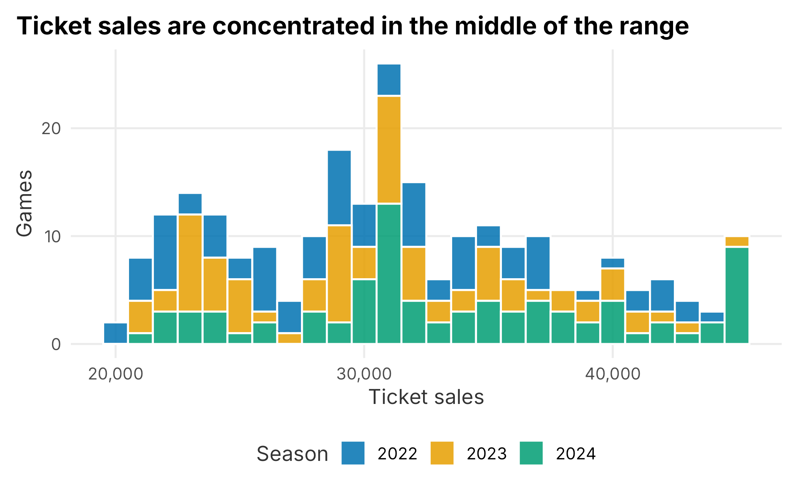
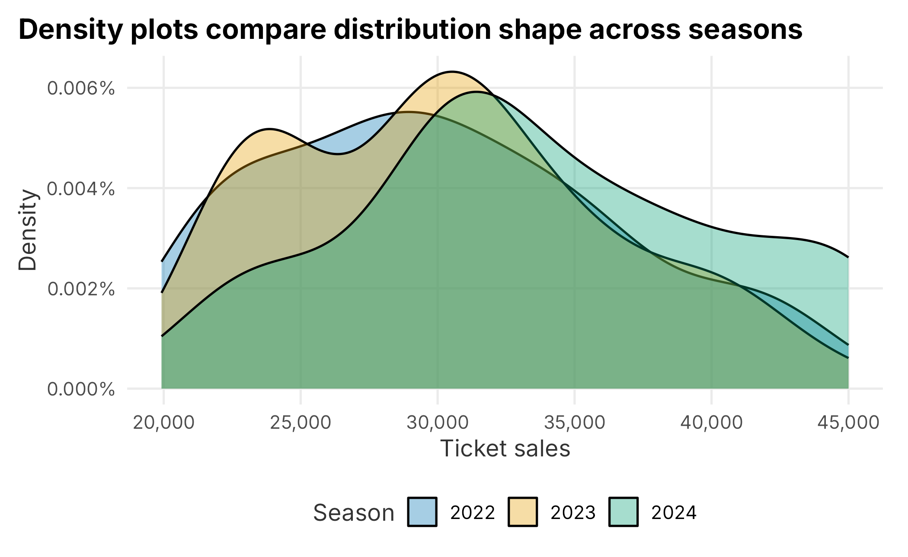
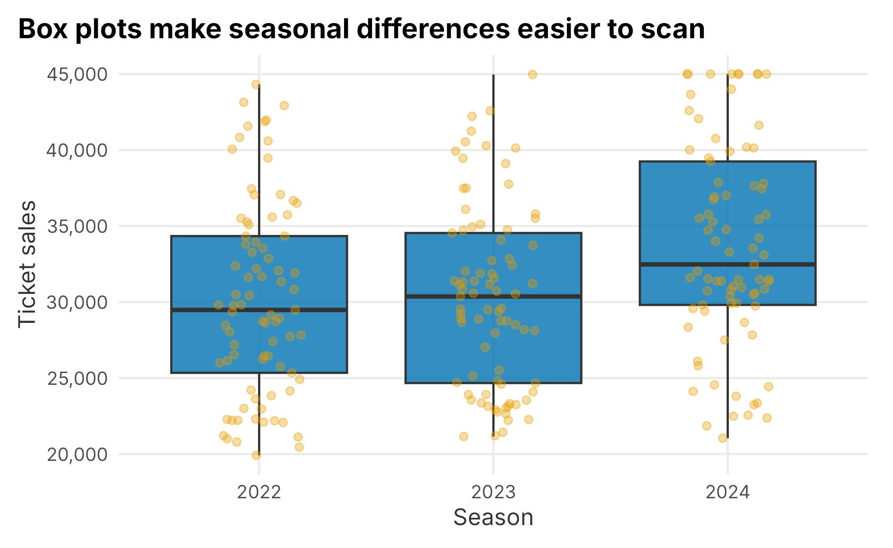
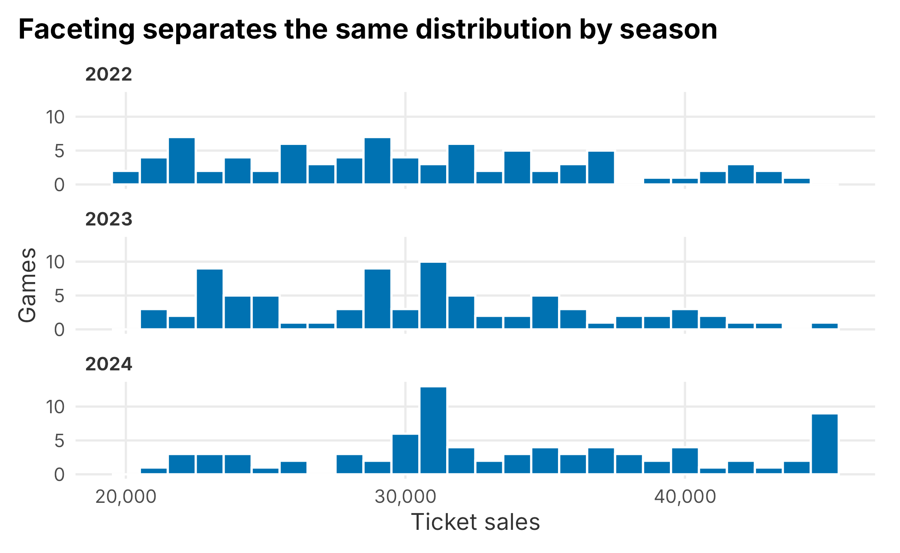
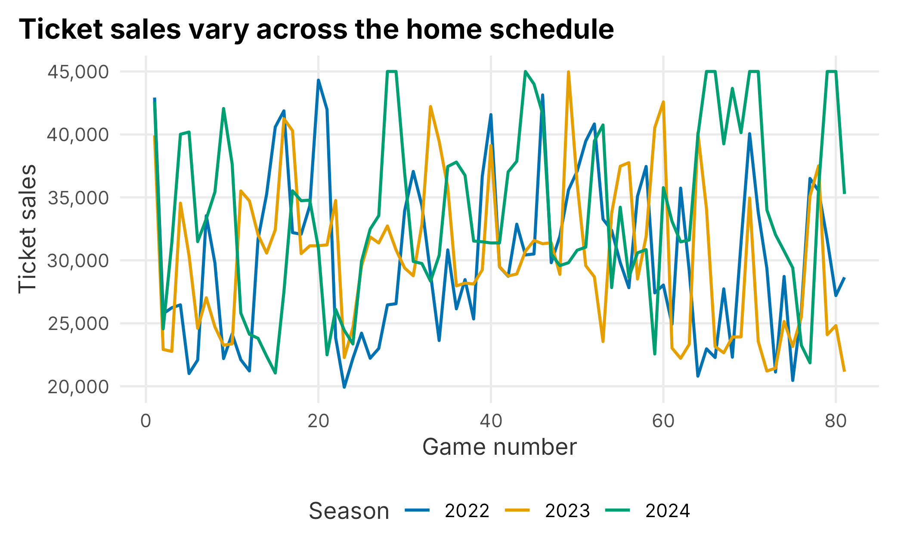
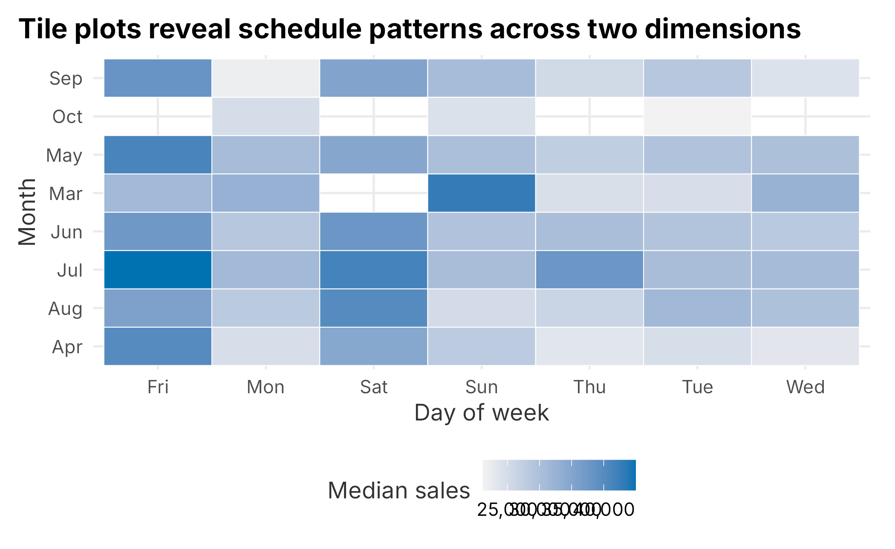
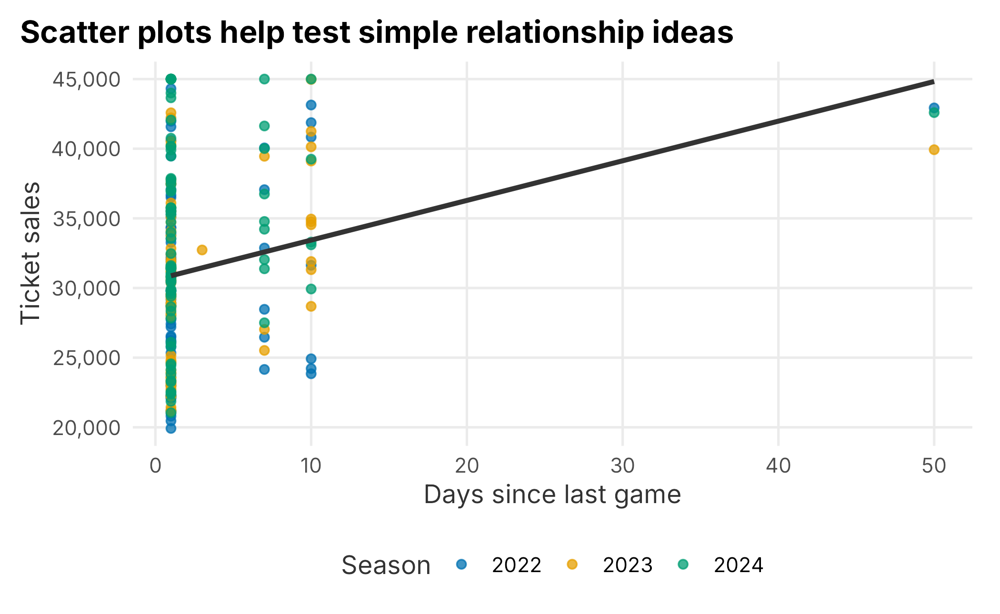
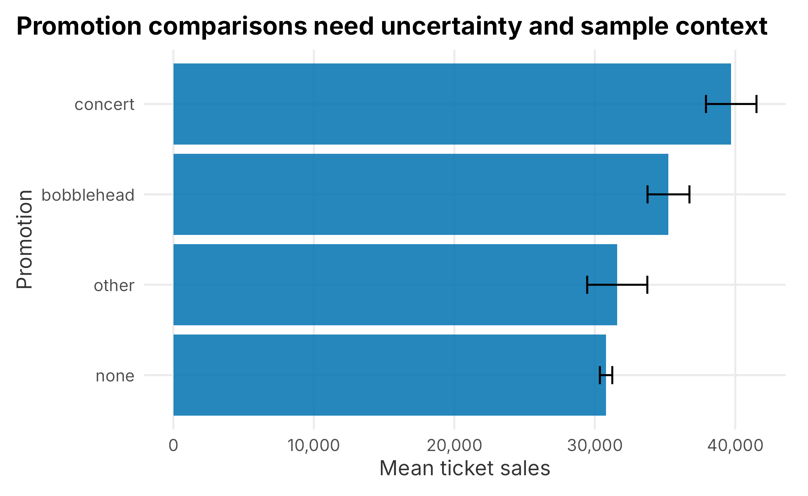
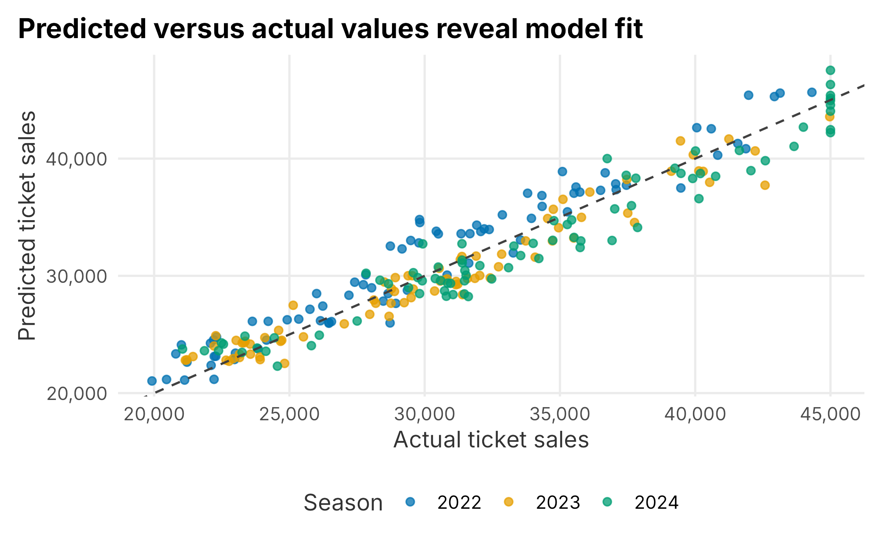

3 Exploring your data
Exploratory data analysis is the habit of looking before modeling. It is where you learn what the data contains, what shape it has, what appears unusual, and what questions are worth asking next.
This chapter uses the data introduced in Chapter 2, especially FOSBAAS::season_data. The goal is not to build a final model. The goal is to develop a repeatable first-pass workflow:
- Check the structure of the data.
- Summarize important fields.
- Visualize distributions and relationships.
- Look for missingness, sparsity, and strange values.
- Use simple statistical tools only after the data has been inspected.
Exploration is part of analysis, but it is also part of communication. A good chart can show a manager where a pattern is obvious, where the data is thin, or where a proposed explanation does not hold up.
3.1 Start With Structure
Before building a graph, inspect the table. Ask basic questions: How many rows are there? What does each row represent? Which fields are numeric, categorical, dates, or logical flags?
| gameNumber | team | date | dayOfWeek | month | weekEnd | schoolInOut | daysSinceLastGame |
|---|---|---|---|---|---|---|---|
| 1 | SF | 2022-03-27 | Sun | Mar | FALSE | FALSE | 50 |
| 2 | SF | 2022-03-28 | Mon | Mar | FALSE | FALSE | 1 |
| 3 | SF | 2022-03-29 | Tue | Mar | FALSE | FALSE | 1 |
| 4 | BAL | 2022-04-05 | Tue | Apr | FALSE | FALSE | 7 |
| 5 | BAL | 2022-04-06 | Wed | Apr | FALSE | FALSE | 1 |
| 6 | BAL | 2022-04-07 | Thu | Apr | FALSE | FALSE | 1 |
season_data is a game-level table. Each row represents one home game. The table includes opponent, date, day of week, month, promotion, and simulated ticket sales.
A quick structural summary helps orient the rest of the chapter.
season_summary <- tibble::tibble(
rows = nrow(season_data),
columns = ncol(season_data),
seasons = n_distinct(season_data$season),
games_per_season = nrow(season_data) / n_distinct(season_data$season),
min_sales = min(season_data$ticketSales),
median_sales = median(season_data$ticketSales),
mean_sales = mean(season_data$ticketSales),
max_sales = max(season_data$ticketSales)
)
knitr::kable(
season_summary,
caption = "High-level ticket sales summary",
align = "r",
format = "markdown",
padding = 0
)| rows | columns | seasons | games_per_season | min_sales | median_sales | mean_sales | max_sales |
|---|---|---|---|---|---|---|---|
| 243 | 12 | 3 | 81 | 19920 | 30956 | 31411.04 | 45000 |
This table gives us a baseline. The average and median are close enough to compare, but the maximum is much larger than the lower quartiles. That tells us to look at the distribution instead of relying only on a mean.
3.2 Distributions
A distribution shows the range and concentration of values. Ticket sales are not equally likely at every level. Some games sell poorly, many cluster near the middle, and a smaller number approach sellout levels.
ggplot(season_data, aes(x = ticketSales, fill = factor(season))) +
geom_histogram(binwidth = 1000, color = "white", alpha = 0.85) +
scale_fill_manual("Season", values = plot_palette) +
scale_x_continuous(labels = scales::comma) +
scale_y_continuous(labels = scales::comma) +
labs(
x = "Ticket sales",
y = "Games",
title = "Ticket sales are concentrated in the middle of the range"
) +
book_theme
Figure 3.1: Distribution of ticket sales
Histograms are usually the best first graph for a numeric field. They are simple, direct, and easy to explain. The bin width matters. A very small bin width creates noise; a very large bin width hides structure.
Density plots show a smoothed version of the same idea. They can make comparisons easier, but they are more abstract than histograms.
ggplot(season_data, aes(x = ticketSales, fill = factor(season))) +
geom_density(alpha = 0.35) +
scale_fill_manual("Season", values = plot_palette) +
scale_x_continuous(labels = scales::comma) +
scale_y_continuous(labels = scales::percent) +
labs(
x = "Ticket sales",
y = "Density",
title = "Density plots compare distribution shape across seasons"
) +
book_theme
Figure 3.2: Density of ticket sales by season
The density curve is scaled so the area under the curve is approximately one. That makes it useful for comparing shape, not raw count.
ticket_density <- density(season_data$ticketSales)
bin_width <- ticket_density$x[2] - ticket_density$x[1]
area_above_40000 <- sum(ticket_density$y[ticket_density$x >= 40000]) * bin_width
round(area_above_40000, 3)## [1] 0.134The value above is the approximate share of the distribution above 40,000 tickets. This is not a business forecast; it is a way to understand what a density plot represents.
3.3 Comparing Groups
Many business questions are comparisons: weekends versus weekdays, promotion types, opponents, sales territories, customer segments, or renewal outcomes.
Box plots are useful because they show median, spread, and potential outliers compactly.
ggplot(season_data, aes(x = factor(season), y = ticketSales)) +
geom_boxplot(fill = plot_palette[1], alpha = 0.8, outlier.shape = NA) +
geom_jitter(width = 0.18, height = 0, alpha = 0.35, color = plot_palette[2]) +
scale_y_continuous(labels = scales::comma) +
labs(
x = "Season",
y = "Ticket sales",
title = "Box plots make seasonal differences easier to scan"
) +
book_theme
Figure 3.3: Ticket sales by season
A box plot is usually more useful than a table when the question is about spread. The center line is the median. The box covers the middle half of the observations. The points show the individual games.
Faceting is another useful way to compare groups because each group gets its own panel.
ggplot(season_data, aes(x = ticketSales)) +
geom_histogram(binwidth = 1000, fill = plot_palette[1], color = "white") +
facet_wrap(~ season, ncol = 1) +
scale_x_continuous(labels = scales::comma) +
scale_y_continuous(labels = scales::comma) +
labs(
x = "Ticket sales",
y = "Games",
title = "Faceting separates the same distribution by season"
) +
book_theme
Figure 3.4: Faceted ticket sales histogram
When a plot is already split by panel, color often becomes unnecessary. Use visual encodings only when they clarify the comparison.
3.4 Time and Sequence
Sports demand has a calendar. Opponent, day of week, month, school schedules, weather, promotions, and team performance can all make demand move through time.
A line chart is a natural first view for a sequence.
ggplot(season_data, aes(x = gameNumber, y = ticketSales, color = factor(season))) +
geom_line(linewidth = 0.8) +
scale_color_manual("Season", values = plot_palette) +
scale_y_continuous(labels = scales::comma) +
labs(
x = "Game number",
y = "Ticket sales",
title = "Ticket sales vary across the home schedule"
) +
book_theme
Figure 3.5: Ticket sales by game number
Line charts are useful for trend and sequence, but they can imply continuity. A game schedule is ordered, but games are still discrete events. Use the line as a guide to the eye, not as proof that demand changes smoothly.
Tile plots are useful when two categorical dimensions matter at the same time.
sales_by_month_dow <- season_data |>
group_by(month, dayOfWeek) |>
summarise(
median_sales = median(ticketSales),
games = n(),
.groups = "drop"
)
knitr::kable(
head(sales_by_month_dow),
caption = "Median sales by month and day of week",
align = "c",
format = "markdown",
padding = 0
)| month | dayOfWeek | median_sales | games |
|---|---|---|---|
| Apr | Fri | 40011.0 | 5 |
| Apr | Mon | 24602.0 | 5 |
| Apr | Sat | 34721.0 | 5 |
| Apr | Sun | 28089.5 | 6 |
| Apr | Thu | 23367.0 | 5 |
| Apr | Tue | 24717.0 | 5 |
ggplot(sales_by_month_dow, aes(x = dayOfWeek, y = month, fill = median_sales)) +
geom_tile(color = "white") +
scale_fill_gradient(
"Median sales",
low = "#f2f2f2",
high = plot_palette[1],
labels = scales::comma
) +
labs(
x = "Day of week",
y = "Month",
title = "Tile plots reveal schedule patterns across two dimensions"
) +
book_theme
Figure 3.6: Median ticket sales by month and day of week
A tile plot can be a good bridge between a table and a chart. It preserves the grid structure of a table but makes high and low values easier to see.
3.5 Relationships
Scatter plots show relationships between two numeric variables. In the season table, daysSinceLastGame is a simple operational variable that can be compared with ticket sales.
ggplot(season_data, aes(x = daysSinceLastGame, y = ticketSales, color = factor(season))) +
geom_point(alpha = 0.75) +
geom_smooth(method = "lm", se = FALSE, color = "grey20") +
scale_color_manual("Season", values = plot_palette) +
scale_y_continuous(labels = scales::comma) +
labs(
x = "Days since last game",
y = "Ticket sales",
title = "Scatter plots help test simple relationship ideas"
) +
book_theme## `geom_smooth()` using formula = 'y ~ x'
Figure 3.7: Ticket sales and days since last game
A scatter plot is not proof of causation. It is a way to see whether a relationship is plausible enough to investigate. If the points are scattered with no clear pattern, a more complicated model may not help much.
3.6 Summarizing Data
Graphs help us see patterns. Tables help us report exact values. Most analysis needs both.
sales_by_day <- season_data |>
group_by(dayOfWeek) |>
summarise(
games = n(),
mean_sales = mean(ticketSales),
median_sales = median(ticketSales),
min_sales = min(ticketSales),
max_sales = max(ticketSales),
.groups = "drop"
) |>
arrange(desc(median_sales))
knitr::kable(
sales_by_day,
caption = "Ticket sales by day of week",
align = "r",
format = "markdown",
padding = 0
)| dayOfWeek | games | mean_sales | median_sales | min_sales | max_sales |
|---|---|---|---|---|---|
| Fri | 33 | 38794.03 | 39456.0 | 31346 | 45000 |
| Sat | 34 | 38146.29 | 37490.0 | 29163 | 45000 |
| Sun | 37 | 29690.38 | 29810.0 | 20800 | 42928 |
| Tue | 36 | 28217.72 | 29152.0 | 21153 | 39250 |
| Wed | 34 | 28893.47 | 28728.5 | 19920 | 43654 |
| Mon | 37 | 28243.46 | 28660.0 | 21126 | 41873 |
| Thu | 32 | 28560.53 | 27029.5 | 21049 | 40138 |
The count column matters. A group with two games should not be interpreted the same way as a group with forty games.
Quantiles are useful because they describe the distribution without assuming it is normal.
sales_quantiles <- quantile(
season_data$ticketSales,
probs = c(0, 0.10, 0.25, 0.50, 0.75, 0.90, 1)
)
knitr::kable(
data.frame(
quantile = names(sales_quantiles),
ticket_sales = as.numeric(sales_quantiles)
),
caption = "Ticket sales quantiles",
align = "r",
format = "markdown",
padding = 0
)| quantile | ticket_sales |
|---|---|
| 0% | 19920.0 |
| 10% | 22797.6 |
| 25% | 26126.5 |
| 50% | 30956.0 |
| 75% | 35664.0 |
| 90% | 40816.6 |
| 100% | 45000.0 |
Quantiles are often more useful than means when setting practical thresholds. For example, you might define high-demand games as the top quartile of ticket sales, then study what those games have in common.
3.7 Reshaping Data
Real analysis often requires changing the shape of a table. Wide data has multiple measures spread across columns. Long data stores the measure names and values in rows. ggplot2 usually prefers long data.
team_day_wide <- season_data |>
filter(team %in% c("SF", "BAL")) |>
group_by(team, dayOfWeek) |>
summarise(
median_sales = median(ticketSales),
games = n(),
.groups = "drop"
) |>
tidyr::pivot_wider(
names_from = team,
values_from = c(median_sales, games)
) |>
mutate(difference = median_sales_BAL - median_sales_SF)
knitr::kable(
team_day_wide,
caption = "Wide comparison of selected opponents",
align = "r",
format = "markdown",
padding = 0
)| dayOfWeek | median_sales_BAL | median_sales_SF | games_BAL | games_SF | difference |
|---|---|---|---|---|---|
| Fri | 33734.0 | 43608.5 | 3 | 2 | -9874.5 |
| Mon | 25658.5 | 25759.0 | 2 | 1 | -100.5 |
| Sat | 29787.0 | 43999.0 | 1 | 1 | -14212.0 |
| Sun | 28209.0 | 42928.0 | 2 | 1 | -14719.0 |
| Thu | 22561.0 | 35357.5 | 3 | 2 | -12796.5 |
| Tue | 26464.0 | 26233.0 | 3 | 1 | 231.0 |
| Wed | 26301.5 | 28773.0 | 4 | 1 | -2471.5 |
team_day_long <- team_day_wide |>
select(dayOfWeek, median_sales_BAL, median_sales_SF) |>
tidyr::pivot_longer(
cols = -dayOfWeek,
names_to = "team",
values_to = "median_sales"
) |>
mutate(team = sub("median_sales_", "", team))
knitr::kable(
team_day_long,
caption = "Long comparison of selected opponents",
align = "r",
format = "markdown",
padding = 0
)| dayOfWeek | team | median_sales |
|---|---|---|
| Fri | BAL | 33734.0 |
| Fri | SF | 43608.5 |
| Mon | BAL | 25658.5 |
| Mon | SF | 25759.0 |
| Sat | BAL | 29787.0 |
| Sat | SF | 43999.0 |
| Sun | BAL | 28209.0 |
| Sun | SF | 42928.0 |
| Thu | BAL | 22561.0 |
| Thu | SF | 35357.5 |
| Tue | BAL | 26464.0 |
| Tue | SF | 26233.0 |
| Wed | BAL | 26301.5 |
| Wed | SF | 28773.0 |
The values are the same. The shape changes because different tasks need different layouts.
3.8 Checking Data Quality
Exploration is not only about finding business insights. It is also about finding data problems. Start with simple checks.
missing_summary <- data.frame(
data_set = c("season_data", "customer_renewals", "demographic_data"),
rows = c(nrow(season_data), nrow(customer_renewals), nrow(demographic_data)),
columns = c(ncol(season_data), ncol(customer_renewals), ncol(demographic_data)),
missing_values = c(
sum(is.na(season_data)),
sum(is.na(customer_renewals)),
sum(is.na(demographic_data))
)
)
knitr::kable(
missing_summary,
caption = "Simple missingness check",
align = "r",
format = "markdown",
padding = 0
)| data_set | rows | columns | missing_values |
|---|---|---|---|
| season_data | 243 | 12 | 0 |
| customer_renewals | 13706 | 10 | 0 |
| demographic_data | 200000 | 14 | 4 |
This teaching data is clean. Real data often is not. A first-pass data quality checklist should include missing values, duplicate keys, impossible dates, negative prices, extreme distances, unexpected categories, and fields that changed meaning over time.
Categorical sparsity is another common issue. Some levels may have too few observations to support a model or a business conclusion.
promotion_counts <- season_data |>
count(promotion, sort = TRUE)
knitr::kable(
promotion_counts,
caption = "Promotion counts",
align = "r",
format = "markdown",
padding = 0
)| promotion | n |
|---|---|
| none | 212 |
| bobblehead | 16 |
| concert | 8 |
| other | 7 |
If a promotion appears only a few times, be careful about claiming it caused a sales difference. The comparison may be dominated by schedule placement, opponent, or a small sample.
3.9 Simple Statistical Checks
Statistical tests can be useful, but they should come after exploration. A test answers a narrow question under assumptions. A graph helps you see whether the question is sensible.
As a simple example, we can compare ticket sales by promotion and day of week using an analysis of variance.
promotion_model <- aov(
ticketSales ~ promotion + dayOfWeek,
data = season_data
)
anova_table <- as.data.frame(anova(promotion_model))
anova_table$term <- row.names(anova_table)
anova_table <- anova_table |>
select(term, everything())
knitr::kable(
anova_table,
caption = "ANOVA results for ticket sales",
align = "r",
format = "markdown",
padding = 0
)| term | Df | Sum Sq | Mean Sq | F value | Pr(>F) | |
|---|---|---|---|---|---|---|
| promotion | promotion | 3 | 865001255 | 288333752 | 12.26602 | 2e-07 |
| dayOfWeek | dayOfWeek | 6 | 4130134954 | 688355826 | 29.28337 | 0e+00 |
| Residuals | Residuals | 233 | 5477064783 | 23506716 | NA | NA |
Do not stop at the p-value. Look at group means and sample sizes.
promotion_summary <- season_data |>
group_by(promotion) |>
summarise(
games = n(),
mean_sales = mean(ticketSales),
sd_sales = sd(ticketSales),
se_sales = sd_sales / sqrt(games),
.groups = "drop"
) |>
arrange(desc(mean_sales))
ggplot(promotion_summary, aes(x = reorder(promotion, mean_sales), y = mean_sales)) +
geom_col(fill = plot_palette[1], alpha = 0.85) +
geom_errorbar(aes(ymin = mean_sales - se_sales, ymax = mean_sales + se_sales), width = 0.2) +
coord_flip() +
scale_y_continuous(labels = scales::comma) +
labs(
x = "Promotion",
y = "Mean ticket sales",
title = "Promotion comparisons need uncertainty and sample context"
) +
book_theme
Figure 3.8: Mean sales and standard error by promotion
Pairwise comparisons can be useful, but they are still descriptive unless the research design supports a causal claim.
tukey_promotion <- TukeyHSD(promotion_model, "promotion")$promotion
tukey_table <- as.data.frame(tukey_promotion)
tukey_table$comparison <- row.names(tukey_table)
tukey_table <- tukey_table |>
select(comparison, everything())
knitr::kable(
tukey_table,
caption = "Tukey comparisons by promotion",
align = "r",
format = "markdown",
padding = 0
)| comparison | diff | lwr | upr | p adj | |
|---|---|---|---|---|---|
| concert-bobblehead | concert-bobblehead | 4465.5000 | -967.0665 | 9898.067 | 0.1475821 |
| none-bobblehead | none-bobblehead | -4442.5448 | -7695.2441 | -1189.845 | 0.0027589 |
| other-bobblehead | other-bobblehead | -3646.7321 | -9332.1099 | 2038.646 | 0.3474454 |
| none-concert | none-concert | -8908.0448 | -13426.6337 | -4389.456 | 0.0000042 |
| other-concert | other-concert | -8112.2321 | -14605.3911 | -1619.073 | 0.0076108 |
| other-none | other-none | 795.8127 | -4023.7710 | 5615.396 | 0.9737610 |
An interval that crosses zero is not statistically distinguishable at the chosen confidence level. Even when a difference is statistically meaningful, the business question remains: Is the lift large enough to justify the cost and operational effort?
3.10 A First Regression
Regression is introduced more carefully in later chapters. Here, we use it as an exploratory tool to see how well basic schedule fields explain ticket sales.
sales_model <- lm(
ticketSales ~ team + dayOfWeek + month + daysSinceLastGame + openingDay + promotion,
data = season_data
)
model_summary <- summary(sales_model)
model_metrics <- tibble::tibble(
residual_standard_error = unname(model_summary$sigma),
r_squared = unname(model_summary$r.squared),
adjusted_r_squared = unname(model_summary$adj.r.squared),
f_statistic = unname(model_summary$fstatistic[1])
)
knitr::kable(
model_metrics,
caption = "First regression summary",
align = "r",
format = "markdown",
padding = 0
)| residual_standard_error | r_squared | adjusted_r_squared | f_statistic |
|---|---|---|---|
| 1980.077 | 0.925496 | 0.9093972 | 57.48835 |
A high R-squared does not make a model good. This model uses many categorical variables on a small table, so it can easily fit the historical data too closely. For exploration, that is acceptable as long as we do not pretend it is a validated forecast.
model_results <- season_data |>
mutate(predicted_sales = predict(sales_model, newdata = season_data))
ggplot(model_results, aes(x = ticketSales, y = predicted_sales, color = factor(season))) +
geom_point(alpha = 0.75) +
geom_abline(slope = 1, intercept = 0, linetype = "dashed", color = "grey25") +
scale_color_manual("Season", values = plot_palette) +
scale_x_continuous(labels = scales::comma) +
scale_y_continuous(labels = scales::comma) +
labs(
x = "Actual ticket sales",
y = "Predicted ticket sales",
title = "Predicted versus actual values reveal model fit"
) +
book_theme
Figure 3.9: Actual versus predicted ticket sales
The dashed line shows perfect prediction. Points far from the line are games the model does not explain well. Those games are often more interesting than the average fitted value because they can reveal missing variables or unusual business conditions.
3.11 Communicating Exploration
Exploration should end with a short list of what you learned and what you still do not know. For the season data, a reasonable first read is:
- Sales vary meaningfully across games and seasons.
- Day of week, month, opponent, and promotion are plausible demand drivers.
- Promotion comparisons are not automatically causal because the schedule is not a randomized experiment.
- Distribution plots and group summaries are more informative than a single average.
- Simple models can help structure thinking, but they need validation before guiding decisions.
That last point matters. Exploratory analysis is not the same as proof. It is the work that helps you ask sharper questions.
3.12 Key Concepts and Chapter Summary
Exploring data is a fundamental part of sports business analytics. You are looking for patterns, data quality problems, useful comparisons, and questions that deserve deeper analysis.
This chapter covered the core tools used throughout the book:
- Histograms and density plots for distributions
- Box plots and facets for group comparisons
- Line charts for schedule sequence
- Tile plots for two-dimensional summaries
- Scatter plots for relationships
- Grouped summaries, quantiles, and reshaping
- Basic missingness and sparsity checks
- Introductory ANOVA and regression as exploratory tools
The most important habit is to slow down before modeling. Understand the table, inspect the fields, make simple graphs, and check whether the result makes business sense. The later chapters build more specific methods on top of that workflow.